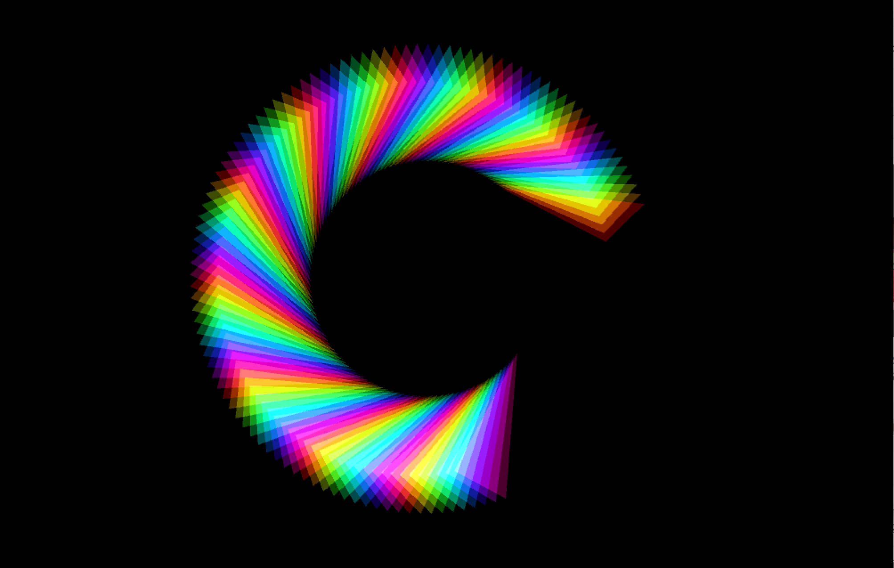

I wanted to create something that showed the history of hate crimes against the LGBTQ+ community, but that there’s hope for the future. I wanted something bold to be in the center, so I chose an image of a person at a Pride parade in the 60s holding up a sign that says “I am a lesbian and I am beauiful.” This centerpiece shows that there is nothing wrong with being a part of the LGBTQ+ community and we should embrace ourselves. The collage is concentric, on the outer circle I have a history of hate crimes, on the inner circle I have people speaking up against the hate, and then the proud person in the center. Throughout these circles I also have my processing sketch, which is a bunch of triangles aligned in a circle. What I liked about this sketch is that a triangle is the shape used for “safe space” stickers in public. So when you see a rainbow triangle that means that area is safe for members of the LGBTQ+ community. What I also appreciated about this sketch is that the triangles form a circle, but the circle is not closed. The open circle shows that there is still work to be done. Hate crimes against LGBTQ+ members are still legal in many states and that needs to change. We need lawmakers to make hate crimes illegal, we need members outside of the community to speak up against these acts of violence, and above all we need people to love and respect members of the LGBTQ+ community. Love wins.
